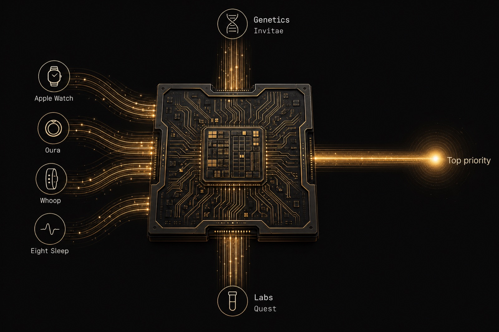
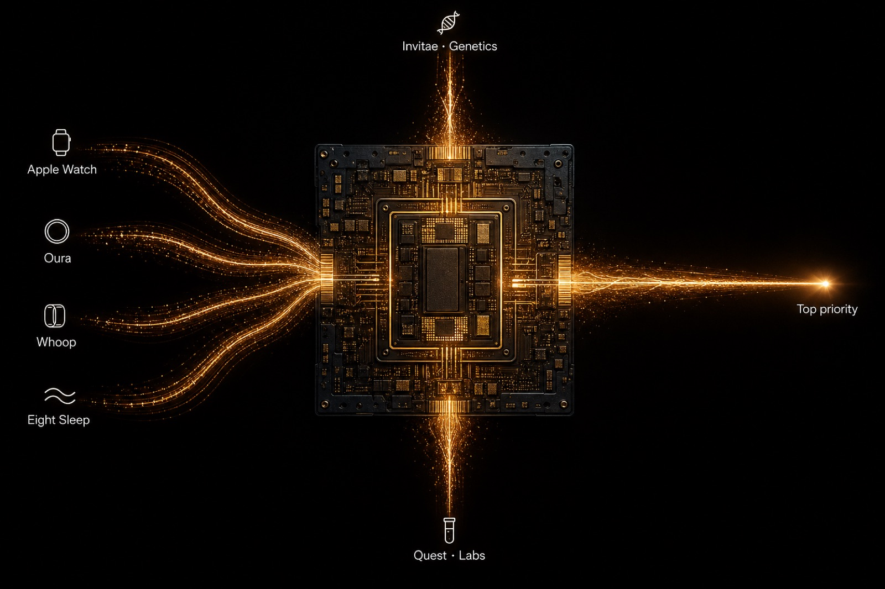
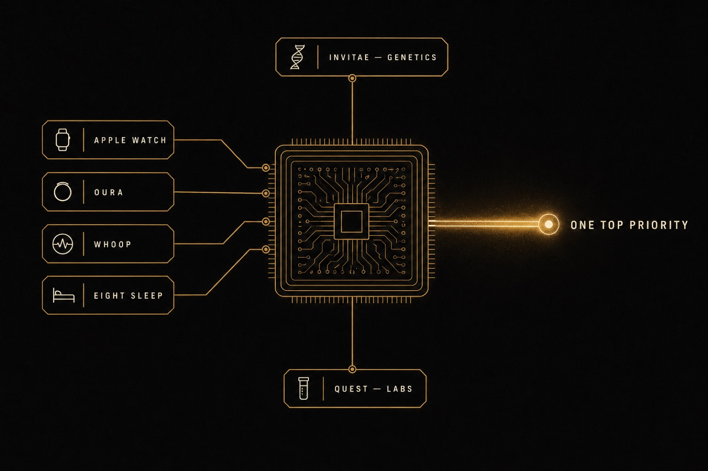

Meridian Clinical Engine — image options
Three directions for the chip illustration. Wearables flowing in from left, genetics from top, labs from bottom, single clinical-priority signal emerging right.
Option A — Stylized illustration, warm and intricate
Detailed gold-trace circuit illustration with internal warm glow. Most ornamental and brand-aligned. Reads "premium engineering."

Option B — Photographic / cinematic chip
Real-looking silicon die shot from above with abstract light-particle data streams. Most serious and tangible. Reads "real technology."

Option C — Minimalist editorial diagram
Clean line-work blueprint feel. Lots of negative space, smallest visual footprint. Reads "elegant systems thinking."
